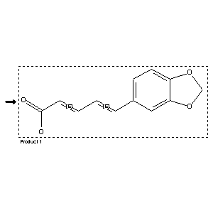

|  |
| FA | RX(1); FLST(1); RX(1) |
Reaction (1 of 1)
| Reaction ID | 5709606 |
| Reactant | trans-3.4-methylenedioxy-cinnamylidenemalonic acid |
| Product BRN | 85624 |
| Product | trans,trans-piperinic acid |
| No. of Reaction Details | 1 |
Reaction Details (1 of 1)
| Reaction Classification | Preparation (half reaction) |
| Reagent | acetic acid anhydride |
| Comment | Handbook |
| Citation Pointer | 507311; Journal; Higginbotham; Lapworth; JCSOA9; J.Chem.Soc.; 121; 1922; 2829;501285; Journal; Scholtz; CHBEAM; Chem.Ber.; 28; 1895; 1192; |
Reference (1 of 2)
| Citation Number | 501285 |
| Document Type | Journal |
| Authors | Scholtz |
| CODEN | CHBEAM |
| Journal Title | Chem.Ber. |
| (Series) Volume | 28 |
| Publication Year | 1895 |
| Page | 1192 |
Reference (2 of 2)
| Citation Number | 507311 |
| Document Type | Journal |
| Authors | Higginbotham; Lapworth |
| CODEN | JCSOA9 |
| Journal Title | J.Chem.Soc. |
| (Series) Volume | 121 |
| Publication Year | 1922 |
| Page | 2829 |